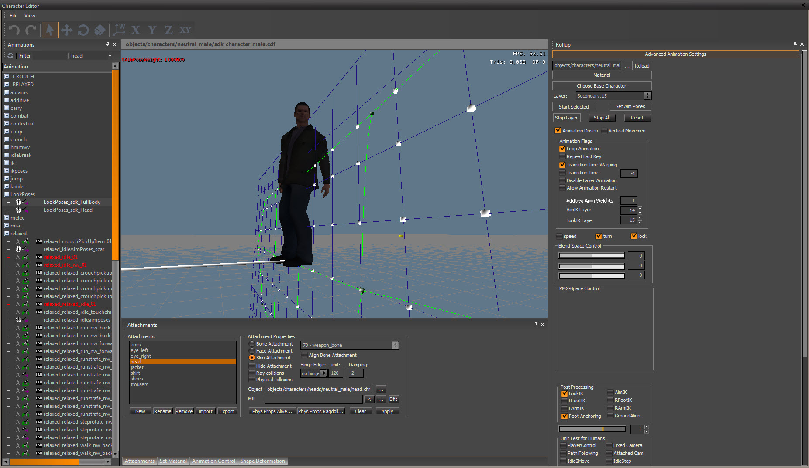
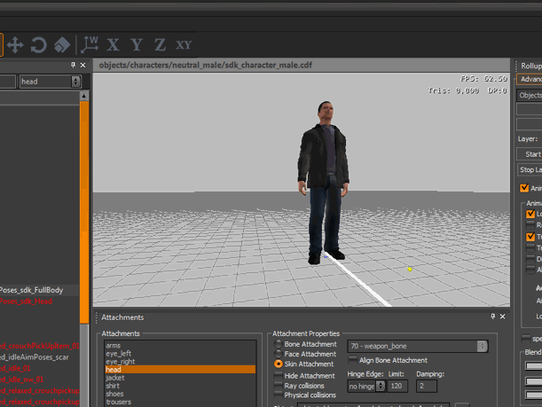

Overview
CRYENGINE supports parametric-blending for automated Look IK that can be used to make characters look at points in the 3D world. This system is used from the code, from AI and can be used by designers through Flow Graph.
You can combine it with different locomotion cycles. The character with Look IK on tries to look in the target direction as long as possible, then it turns its head away. Warping is really preserving the style of the base-motion, because we always start with the final animation-pose and add small modifications to it to comply with the new constraints. The spine, head and the eyeballs are animated to make the character look in the target direction. The eye-lids move as well creating believable Gaze Control.
The same techniques are used in half-interactive cut-scenes, to make sure the actors makes eye-contact with the player.
Chapters

CHRPARAMS Setup
Creating the Look Poses
Once you have setup the definitions in the .chrparams file, you need to create the Look Poses asset in 3ds Max. You can use the AimPose Creator provided with CryMaxTools to create the Look Poses.
Look poses work by setting up a pattern or range of aiming directions that the engine uses to blend between, in order to find the correct direction in which a character should be looking. CRYENGINE requires exactly 9 or 15 sequential frames to create this pattern.
Here is a sample Look Poses Bip asset: LookPoses_SDKFullBody.bip
You need to export the animation into a folder mapped for your character (see .chrparams file)
The final exported CAF file cannot be part of a DBA file.
Testing the Look IK in the Character Editor
In the character editor you can test them by playing any default animation on the default layer, then activating a lookpose on the layer which has been assigned being a look-ik layer (default is 15).
A helpful CVar for debugging is ca_DrawAimIKVEGrid 1. Make sure the Look IK checkbox is on!


Using Look IK on a character in TrackView
For information on how to use the look IK system with Trackview refer to: Look IK for Cinematics.